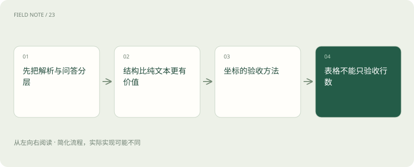
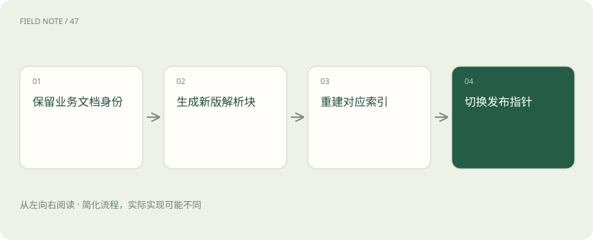

先说这篇在讲什么
一份维修手册明明写着答案，系统却报错备件号，问题可能出在最开始读文件时：字认错了、表格串行了，或者引用落错页。本篇从这些常见问题出发，讲清MinerU、Docling和RAGFlow分别负责什么，再教你怎样检查文字、表格、页面位置和升级后的旧引用。
先看一个具体例子
实际操作一遍：手册第七页轴承表跨到第八页：先核对两页表头是否续接，再检查型号与数量的对应关系，最终回答同时引用两页。
遇到陌生概念，可以先读
打个比方，帮助理解
这是帮助理解的比方，实际过程以正文说明为准。
一图看懂

先弄清是读文件出错，还是找答案出错
你问机器怎样换轴承，它报错了备件号。先打开文件看：如果表格早就读串了行，再聪明的问答模型也很难救回来。MinerU主要帮忙从复杂文档提取内容；Docling把文档转换成带结构的表示；RAGFlow还管理知识库和检索问答。三者工作范围有重叠，却不是随手替换的同一种工具。
把流程分成读文件、建索引、回答三个关卡。读文件的接口接收文件和处理选项，交出内容块、图片等资源；知识库还要管理导入任务和搜索。先保存读出的结果，出错才能知道该重试哪一步。
读出来的字，还得按正确顺序摆好
想象维修手册左边是操作步骤，右边是警告。字都识别对了，却先读半段步骤再跳到右栏，意思照样会乱。这就是为什么只看导出的Markdown是否顺眼还不够：它便于阅读，却未必保住原页面的关系。
每个内容块最好带上类型、所属章节、页码和图片引用，同时记录解析器的版本与配置。警告应跟着对应步骤走，重复页眉不应当作正文。找几页人工标好阅读顺序，再沿输出逐段念一遍；出现跳栏或脚注接进正文，就应记为解析错误。
引用高亮，要真的落在那句话上
答案说证据在第七页，可点开后高亮到了页脚，这仍然没有引用成功。页面上的矩形位置叫坐标，要先说明页码从零还是一开始、原点在哪、单位是什么，以及是否旋转或裁剪过。缺了这些说明，一组数字没有可比性。
拿普通页、双栏页、旋转扫描页和裁剪页，把识别区域叠回原图，再放大缩小检查。全部往一个方向偏，可能是裁剪边界没算；越靠右偏得越多，可能是比例不对；上下倒过来，可能是原点不同。应用保存原坐标，再明确转换，避免前端重复缩放。
图解：处理机制
表格最怕数字还在，归属却错了
报价单里的十件、五十元和税率，必须属于同一件物料。只数行数或核对总额，发现不了两行对调。合并表头、跨页续表、空格子都会让普通文字失去行列关系。
抽几张表人工标答案，逐个核对关键格子的值、行列位置和跨行跨列关系。跨页表先保留两页出处，再按能检查的规则合并。问“第二季度甲型号数量”比只问总价更容易暴露错列。小数点、千分位、百分号要讲清；模型猜出的缺失单价必须另标推测，不能冒充原始记录。
先判断页面有没有可靠的文字
扫描件像一张照片，需要OCR，也就是从图片认字。有文字层的PDF可以直接提取，但那层文字也可能编码坏了，甚至是旧版本。不能看到有文字层就认为它一定可靠。
先检查文件类型和文字质量，再选提取方式。把零件号中的O认成0，可能比普通句子错一个字严重得多，因此型号、日期、数量和负号要单独验。两种方式都产出文字时，比较覆盖情况与关键字段，拿不准就让人回看页面；不要只挑字数更多的结果，也要防止同一区域被识别两次。
工具怎样接进系统，要先划清责任
团队已有自己的知识库，可以让MinerU或Docling只负责转换文件，自己保存统一的文档编号和中间结果。想采用RAGFlow的完整流程，则先核对实际版本支持的解析配置、知识库管理和检索接口，再决定接到哪里。
用同一批手册比较出处能否追踪、处理速度、失败后怎样恢复，以及人工修正有多费事。统一格式只承诺验过的字段：没有可靠表格位置就写缺失，别拿整页框假装精确。保留工具原输出，便于以后重新转换。还要分开核对代码、模型权重和依赖许可；2026年11月核对的MinerU许可在Apache-2.0基础上有附加条款，部署须看所选版本完整文本。
换一种读法时，旧答案也要找得到
今天升级解析器，原来的一段可能被拆成三段。如果直接覆盖编号，昨天答案的引用就可能指到别处。给文件内容和解析结果分别记版本，在新索引上跑固定问题，确认后再切换使用入口。
旧版按保留规则存放，真正删除资料时则要连旧结果和缓存一起清理。重试任务不能重复插入，文件名也不能当唯一身份。文件哈希能判断字节是否一样，却不能说明属于哪个部门、谁有权看。用一个发布指针指向明确的解析与索引版本，方便回退；清理前检查历史引用仍依赖哪些文件。
图解：版本与恢复机制

拿一份手册，实际走完验收
可以先选二十页手册，故意包含双栏、警告框和备件表。问“换轴承前切断哪些能源、用哪个备件、数量多少”，要求每项答案都能打开对应页和区域。这个数量只是试验设计，不是任何工具的官方性能承诺。
分别记录文字有没有漏、表格有没有串行、搜索有没有找到、答案有没有保留警告。给每题列出允许使用的证据页，防止模型凭常识答对却被误判成功。再分别问单元格、步骤前提和图注。如果步骤答得好、备件号一直错，应先修表格和认字；多取一些段落或换大模型，不能把错误资料变正确。
放在一起对比
| 组件 | 输入与输出 | 限制与验收边界 |
|---|---|---|
| MinerU | 文档文件→解析内容及资源 | 用于复杂文档提取；需检验所选后端和格式 |
| Docling | 文档→统一结构化表示及导出 | 阅读顺序与表格结构需按样本验收 |
| RAGFlow | 文档与知识库配置→检索问答链路 | 管理范围更广；解析与检索分别定位问题 |
读完先记住这一句
别踩这个误区
想一想
你可能会问：为什么Markdown看起来正常仍不能上线？
原因是：纯文本可读只验证了一种输出；阅读顺序、行列关系和引用坐标仍可能出错，需要直接对照页面。
关联阅读
资料与边界
本文为原创知识讲解。类比和图示经过简化；示例数字不代表实测或报价。整理日期：2026-11-05。文末列出对应技术的原始资料，具体功能与版本支持请以原文为准。
按完整目录逐篇阅读